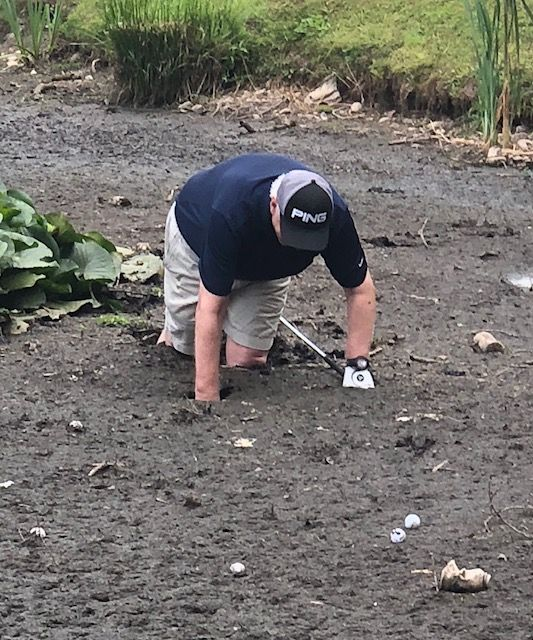
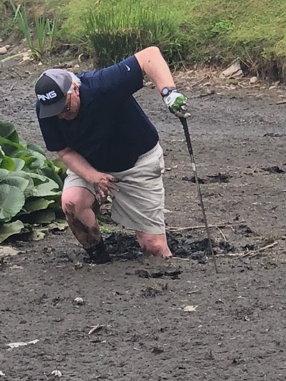

Research has investigated the therapeutic effect of mud therapy for golfers.
1. Mud therapy reduces the number of shots in escaping hazards.
2. Mud therapy protects brain density and improves intelligence in most golfers. P.S. is that a birdie on his head?

3. Mud therapy benefits your stance and posture

4, Having found your ball, make sure you have the correct club (Rescue preferably), waggle your feet, then with your weight on the right foot, cry "Heeeeeeelp"!